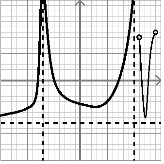

Effectuer l'étude (domaine, image, croissance/décroissance, ordonnée à l’origine, zéros, signe, extremums relatif/absolu) de la fonction suivante :

Trouver l’équation générale de la droite perpendiculaire à
qui passe par le point
. Représenter graphiquement la situation.
Calculer la distance entre l’ordonnée à l’origine et le zéro de la fonction . Représenter la situation graphiquement la situation.